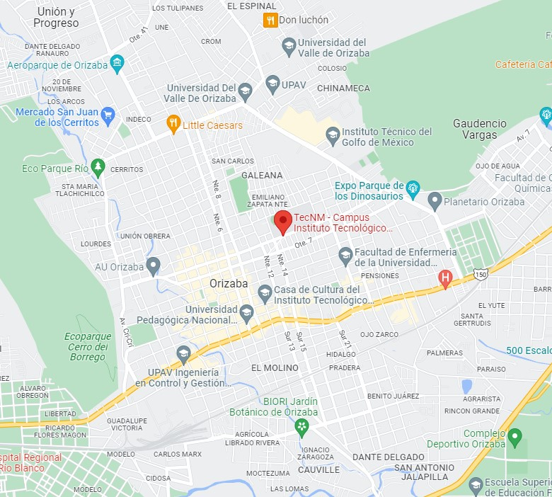

¿Quienes somos?
Somos un pequeño grupo de estudiantes de la carrera de Ingeniería en Sistemas Computacionales del Tecnológico Nacional de México campus Orizaba, actualmente del octavo semestre con especialidad en Ingeniería Web, con el objetivo de reducir el impacto psicológico en los estudiantes a causa de las clases en línea.

En colaboración con expertos en el tema, se llevó a cabo el desarrollo de ésta página web gratuita de índole informativa y de ayuda psicológica, para lograr reducir las alteraciones emocionales, ya que se presentaron casos diversos de deserciones escolares por parte de los estudiantes del instituto, así como una notoria caída de promedios y calificaciones de los mismos; por ello quisimos llegar a aquellos afectados por la situación para poder incrementar exitosamente la estabilidad emocional de los estudiantes de la carrera de Ingeniería en Sistemas Computacionales del Tecnológico Nacional de México campus Orizaba.
Los colaborares detrás de esta pagina web, esta conformado por los siguientes ingenieros:
Sergio Javier Hernandez Vigil
Ingeniero en Sistemas Computacionales
Experto en desarrollo FrontEnd, diseñador de base de datos y servidores web.
Consuelo Lizeth Medina Morales
Ingeniera en Sistemas Computacionales
Experta en desarrollo backend, gestión de proyectos y servidores de base de datos web.
Sergio Aldair Caballero Sanchez
Ingeniero en Sistemas Computacionales
Experto en programación lógica, programación en Java y en bases de datos.
Paola Lisette Lara Bernardo
Ingeniera en Sistemas Computacionales
Experta en dirección de software, logistica y programación en PHP.
Israel Serrano Rosete
Ingeniero en Sistemas Computacionales
Experto en desarrollo full stack, administración de redes y Python.
A partir del 2020, año en que inició la pandemia de COVID-19 en el país, los alumnos del Instituto Tecnológico de Orizaba, de la carrera de Ingeniería en Sistemas Computacionales, han presentado afecciones emocionales debido al confinamiento forzado y clases en línea, a consecuencia de la pandemia por COVID-19, se presentaron situaciones poco favorables en diversos sectores como la economía, producción y entre ellos la salud, por lo que se realizó una encuesta virtual para corroborar tal situación, dicha encuesta fue realizada en la primera mitad del mes de diciembre del 2021, dando resultados que confirman que, efectivamente, los alumnos sufren o han sufrido problemas emocionales y psicológicos debido a la situación actual, sintiéndose afligidos, padeciendo ansiedad, entre otras afecciones. Surgieron contratiempos en el desarrollo académico, debido a la falta de equipos y requerimientos solicitados por los profesores, esto adquirió un choque de emociones, entre ellas ansiedad y estrés.
Por éstos motivos les presentamos ésta página web la cual esperamos que sea de su agrado, agradecemos en gran manera su visita!